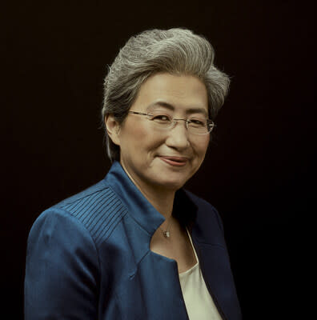
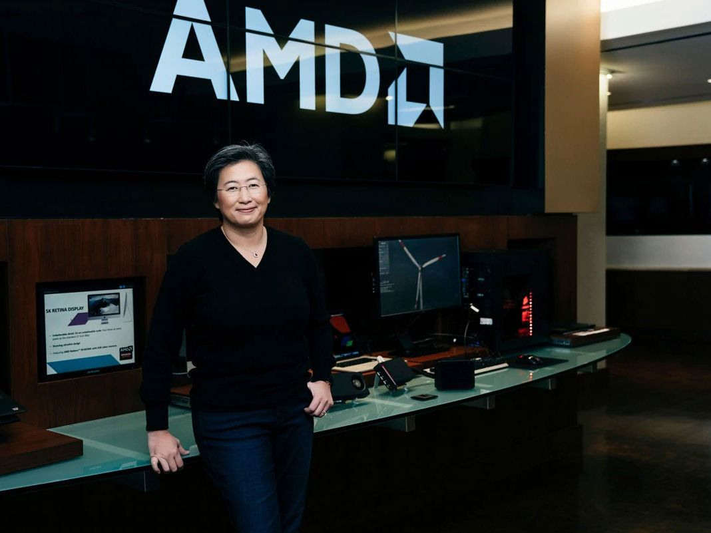
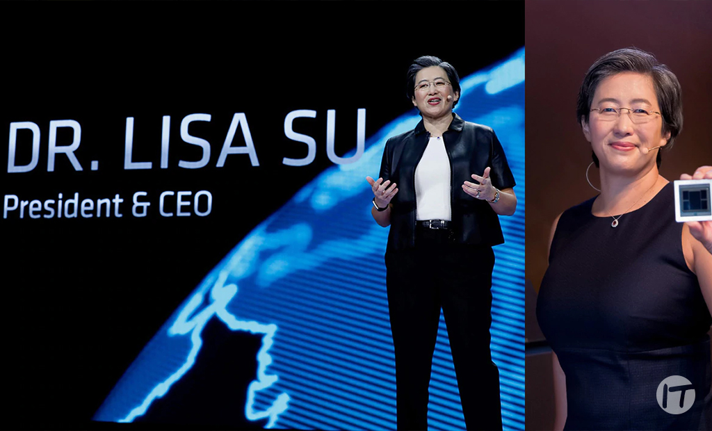

La Dra. Lisa Su es una destacada ingeniera egresada del MIT, donde realizó toda su formación académica hasta obtener su Doctorado en Ingeniería Eléctrica en 1994. Durante sus años de estudio, se especializó en la fabricación de semiconductores y desarrolló técnicas innovadoras para mejorar la conexión de microchips, conocimientos que años más tarde le permitieron liderar la industria tecnológica y transformar por completo el rendimiento de los procesadores modernos.

A nivel profesional, su mayor hito ha sido el rescate financiero y tecnológico de la empresa AMD, logrando que pasara de estar casi en la quiebra a convertirse en el principal competidor de Intel mediante la creación de la arquitectura Ryzen. Su liderazgo estratégico la llevó a ser la primera mujer en recibir la Medalla Robert Noyce, consolidándose como una de las CEO más influyentes del mundo al demostrar que una gestión enfocada en la excelencia técnica puede cambiar el rumbo de toda la industria de la computación.
